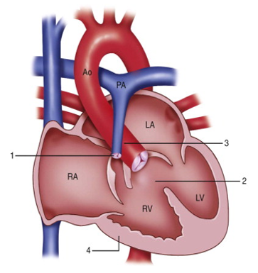
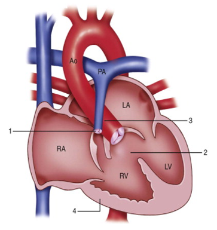

Tempat-Tempat Nyeri Pada Gangguan Jantung - Direktorat P2PTM
2021.06.08 01:06

Proporsi Pemeriksaan Kurang Sayur & Buah : 0.8% Konsumsi Rokok : 0.8% Pengukuran Fungsi Par : 1.2% Benjolan Pada Payudara
KEMENTERIAN KESEHATAN REPUBLIK INDONESIA
DIREKTORAT PENCEGAHAN DAN PENGENDALIAN PENYAKIT TIDAK MENULAR
DIREKTORAT JENDERAL PENCEGAHAN DAN PENGENDALIAN PENYAKIT
Ikuti Kami Surveilans Login Web P2PTM Login Menu Pilihan HOME PROFIL Direktorat P2PTM Tugas dan Fungsi Visi Misi Struktur Organisasi Subbagian Tata Usaha SUBDIT PDMGM SUBDIT GIF SUBDIT PKKD SUBDIT PJPD SUBDIT PPKGI Lokasi dan Kontak Latar Belakang Program P2PTM dan Indikator Strategi Pencegahan dan Pengendalian PTM di Indonesia Perkembangan Pencegahan dan Pengendalian Penyakit Tidak Menular di Indonesia 2013-2019 Rancangan Indikator Renstra Kemenkes (P2PTM) 2020-2024 Daftar Informasi Publik Pelaksanaan dan Pencapaian Evaluasi Kinerja dan Rencana Tindak Lanjut Kerja Nyata Sehatkan Indonesia Peta Jumlah Posbindu PTM Peta Jumlah Puskesmas Pandu Daftar Peraturan, Keputusan, Kebijakan, Pedoman, KIE terkait P2PTM Pengumuman Pengadaan Barang dan Jasa Anggaran dan Realisasi Keuangan Peta Puskesmas yang telah melakukan Deteksi Dini Kanker Payudara dan Kanker Leher Rahim Peta Deteksi Dini Katarak SAKIP Direktorat P2PTM Informasi LHKPN KIE dan Pedoman, Peraturan DMGM COVID-19 Download Dokumen Prosedur Evakuasi Keadaan Darurat Kantor Direktorat P2PTM Kontak (Pertanyaan, Permohonan Informasi dan Laporan Pengaduan) INFORMASI Penyakit Jantung dan Pembuluh Darah Stress Penyakit Gangguan Imunologi Penyakit Gangguan Metabolik Thalassemia Gangguan Indera & Fungsional Penyakit Diabetes Melitus Penyakit Kanker dan Kelainan Darah Obesitas Penyakit Paru Kronik KEGIATAN Bagian ini berisi berbagai kegiatan yang berkaitan dengan Pencegahan dan Pengendalian Penyakit Tidak Menular - Berita, Advokasi, KIE, Penyuluhan, Sosialisasi, Pelatihan, Jejaring, Seminar, Pelaksanaan KTR, Pelaksanaan Posbindu PTM, dan berbagai kegiatan lain. Subdit Penyakit Paru Kronik dan Gangguan Imunologi Subdit Penyakit Jantung dan Pembuluh Darah Subdit Penyakit Kanker dan Kelainan Darah Subdit Penyakit Diabetes Melitus dan Gangguan Metabolik Subdit Gangguan Indera dan Fungsional Subbagian Tata Usaha GALERI Galeri Foto Galeri Video DOKUMEN Materi Pusat Materi Daerah ARTIKEL Hidup Sehat Penyakit / Medis Berita Dan Penelitian Ilmiah INFOGRAPHIC Stress Gangguan Indera & Fungsional Hipertensi , Penyakit Jantung dan Pembuluh Darah Obesitas Penyakit Diabetes Melitus Penyakit Gangguan Imunologi Penyakit Gangguan Metabolik Penyakit Jantung dan Pembuluh Darah Penyakit Kanker dan Kelainan Darah Penyakit Paru Kronik Thalassemia PETA LOKASI Posbindu Puskesmas 05 Oktober 2017Tempat-Tempat Nyeri Pada Gangguan Jantung
Oleh : P2PTM Kemenkes RISerangan Jantung seringkali menyebabkan penderitanya mengeluh nyeri atau rasa tidak nyaman.Cermati lokasi yang ditimbulkan oleh nyeri atau rasa tidak nyamandan bedakan dengan nyeri karena penyebab lain.
# CERDIK # DukungGERMAS # CegahPTM # jantungkoroner
Gejala paling umum dari penyakit jantung coroner adalah angina atau angina pectoris yang juga dikenal sebagai nyeri dada. Angina dapat digambarkan sebagai ketidaknyamanan, berat, tertekan, sakit, terbakar, rasa penuh, seperti diremas, atau nyeri akibat penyakit jantung coroner. Seringkali angina diduga sebagai nyeri lambung.
Angina biasanya dirasakan di dada sebelah kiri, tetapi nyeri dapat menjalar ke bahu, lengan, tenggorokan, rahang atau punggung (lihat gambar)
Jika anda mengalami gejala ini, anda harus lebih waspada. Jika anda belum pernah didiagnosa dengan penyakit jantung, anda harus segera mencari penyebab nyeri tersebut. Jika anda sudah pernah mengalami angina sebelumnya, gunakanlah obat angina anda seperti yang dianjurkan dokter anda dan amatilah gejala angina anda apakah pola angina anda teratur atau makin memburuk.
Apa penyebab angina?
Angina terjadi ketika aliran darah ke jantung berkurang sehingga mempengaruhi pengiriman oksigen ke jantung yang penting untuk memberi nutrisi ke sel otot jantung. Ketika hal ini terjadi, otot jantung harus menggunakan sumber lain sebagai energi untuk menjalankan fungsinya memompa darah ke tubuh. Sumber energi ini berupa asam laktat. Tetapi asam laktat terbukti tidak efisien karena dapat menumpuk di otot jantung dan menyebabkan rasa sakit. Beberapa obat angina bekerja dengan menghambat penggunaan asam laktat ini sebagai sumber energi.
Apakah jenis angina?
Jenis-jenis angina adalah :
• Angina stabil. Rasa sakit yang timbul dapat diprediksi dan muncul hanya pada saat beraktivitas atau dalam tekanan emosi dan menghilang saat beristirahat
• Angina tidak stabil. Hal ini bisa merupakan gejala terjadinya serangan jantung. Nyeri yang dirasakan berbeda dengan nyeri angina biasa atau nyeri yang terjadi
Bisakah Angina Terjadi Tanpa Penyakit Koroner?
Angina dapat terjadi tanpa adanya penyakit koroner apapun. Sampai dengan 30% orang dengan angina dengan masalah katup jantung yang disebut stenosis aorta, yang dapat menyebabkan penurunan aliran darah ke arteri koroner dari jantung. Orang dengan anemia berat mungkin memiliki angina karena darah mereka tidak membawa cukup oksigen.
Orang dengan otot-otot jantung menebal membutuhkan lebih banyak oksigen dan dapat memiliki angina ketika mereka tidak mendapatkan cukup.
Artikel Sebelumnya
5 Strategi Percepatan Penanggulangan Gangguan Penglihatan Artikel Selanjutnya
Dari Jombang Untuk Kesehatan Indera Nasional
Artikel Terkait
Diagnosis, Klasifikasi, Pencegahan, Terapi Penyakit Ginjal Kronis Hari Hipertensi Dunia 2019 : “Know Your Number, Kendalikan Tekanan Darahmu dengan CERDIK.”. DAMPAK PENCEMARAN UDARA (POLUSI UDARA) TERHADAP PENYAKIT HIPERTENSI Protokol Isolasi Mandiri Covid-19 Hari Jantung Sedunia (HJS) Tahun 2019 : Jantung Sehat, SDM Unggul Terpopuler Terbaru 27 Maret 2021 Webinar Kesehatan "Gerakan Lawan Obesitas, Lawan COVID-19" 06 Mei 2021 Media Briefing "Cegah dan Kendalikan Hipertensi Untuk Hidup Lebih Lama" 22 April 2021 Sosialisasi Daring Pedoman Pengelolaan Prediabetes untuk Tenaga Kesehatan di 5 Provinsi (Sulawesi Utara, Kalimantan Timur, Kepulauan Riau, Kalimantan Utara dan Gorontalo) 07 Mei 2021 #SehatWicara Zero Kelahiran Talasemia Mayor 07 Mei 2021 Webinar Sosialisasi Terkini Penanganan Obesitas dan Prediabetes di FKTP 27 Mei 2021 Indonesia Menyuarakan Pentingnya Pencegahan Faktor Risiko PTM Pada Sidang WHA 74 19 Mei 2021 Talkshow: Cegah dan Kendalikan Hipertensi untuk Hidup Sehat Lebih Lama 19 Mei 2021 Lomba Gerak Bersama Kemenkes dan AMSA-Indonesia 08 Mei 2021 Webinar “ Zero Kelahiran Talasemia Mayor” 07 Mei 2021 Media Briefing "Mengungkap Kesalahpahaman Tentang Asma"Upcoming Agenda
31 Mei 2021Hari Tanpa Tembakau Sedunia 2021
25 Mei 2021Hari Tiroid Sedunia 2021
17 Mei 2021Hari Hipertensi Sedunia 2021
10 Mei 2021Hari Lupus Sedunia 2021
Selengkapnya
Newsletter
Tetap terhubung dengan kami untuk Update info terbaru agenda-agenda PTM Kementerian Kesehatan Indonesia
Profil P2PTM
Direktorat P2PTM Latar Belakang Daftar Informasi Publik Download Dokumen Prosedur Evakuasi Keadaan Darurat Kantor Direktorat P2PTM Kontak (Pertanyaan, Permohonan Informasi dan Laporan Pengaduan)Informasi P2PTM
Penyakit Jantung dan Pembuluh Darah Stress Penyakit Gangguan Imunologi Penyakit Gangguan Metabolik Thalassemia Gangguan Indera & Fungsional Penyakit Diabetes Melitus Penyakit Kanker dan Kelainan Darah Obesitas Penyakit Paru KronikKegiatan P2PTM
Subdit Penyakit Paru Kronik dan Gangguan Imunologi Subdit Penyakit Jantung dan Pembuluh Darah Subdit Penyakit Kanker dan Kelainan Darah Subdit Penyakit Diabetes Melitus dan Gangguan Metabolik Subdit Gangguan Indera dan Fungsional Subbagian Tata UsahaGaleri P2PTM
Galeri Foto Galeri VideoKEMENTERIAN KESEHATAN REPUBLIK INDONESIA
Hubungi Kami
Alamat : Jl. HR. Rasuna Said, Blok X.5, Kavling 4-9 Kuningan
Kotak Pos 223 Jakarta 10560 - Indonesia
Telepon : +62 21 424 7608
Fax : +62 21 4200944
Email : tu.p2ptm@kemkes.go.id
Tautan
Kementerian Kesehatan Republik Indonesia Kemenkes RI Direktorat Jenderal P2P Tanya Tentang Tiroid Presiden RI Prioritas Kesehatan 2019 Lihat Tautan LainnyaIkuti Kami
FAQ Peta Situs Copyright © 2016-2020 Direktorat P2PTM Kementerian Kesehatan RI, All Right Reserved.
- Penyakit Penyakit Jantung - Gejala, Penyebab, Pengobatan .
- Jantung - Gejala, Penyakit, dan Cara Mengobati | Halodoc.com
- Jangan Abaikan Gejala-Gejala Jantung Bengkak Berikut Ini .
- 11 Gejala Penyakit Jantung yang Bisa Terlihat di Kulit dan .
- Jantung - Wikipedia bahasa Indonesia, ensiklopedia bebas
- Penyakit Jantung - Pengertian, Gejala, Penyebab, Faktor .
- Mengatasi Sakit Jantung dan Serangan Jantung – Pemerintah .
- Waspada dan Kenali Lebih Jauh Ciri-Ciri Sakit Jantung .
- Patut waspada, inilah 4 ciri-ciri penyakit jantung - Kesehatan
- Tempat-Tempat Nyeri Pada Gangguan Jantung - Direktorat .
- Penyakit Penyakit Jantung - Gejala, Penyebab, Pengobatan .
adalah organ terpenting dalam tubuh manusia dan mempunyai ukuran sebesar kapalan tangan. berfungsi memompa dan menyebarkan darah . - Jantung - Gejala, Penyakit, dan Cara Mengobati | Halodoc.com
Di Indonesia sendiri, penyakit kardiovaskuler, stroke dan penyakit koroner adalah penyebab utama kematian yang menyebabkan lebih dari 470.000 . - Jangan Abaikan Gejala-Gejala Jantung Bengkak Berikut Ini .
(bahasa Latin: cor) adalah sebuah rongga, rongga organ berotot yang memompa darah lewat pembuluh darah oleh kontraksi berirama yang berulang. - 11 Gejala Penyakit Jantung yang Bisa Terlihat di Kulit dan .
7 hari yang lalu — - Jantung - Wikipedia bahasa Indonesia, ensiklopedia bebas
Tingginya angka kematian akibat penyakit , khususnya serangan , selayaknya menjadi perhatian masyarakat dan petugas kesehatan sehingga . - Penyakit Jantung - Pengertian, Gejala, Penyebab, Faktor .
Gejala paling umum dari penyakit coroner adalah angina atau angina pectoris yang juga dikenal sebagai nyeri dada. Angina dapat digambarkan . - Mengatasi Sakit Jantung dan Serangan Jantung – Pemerintah .
Gagal , merupakan suatu kegagalan otot untuk memompakan darah secara memadai ke seluruh tubuh. Aritmia, merupakan suatu gangguan . - Waspada dan Kenali Lebih Jauh Ciri-Ciri Sakit Jantung .
3 hari yang lalu — - Patut waspada, inilah 4 ciri-ciri penyakit jantung - Kesehatan
16 Okt 2020 — - Tempat-Tempat Nyeri Pada Gangguan Jantung - Direktorat .
7 Mei 2021 —
adalah organ terpenting dalam tubuh manusia dan mempunyai ukuran sebesar kapalan tangan. berfungsi memompa dan menyebarkan darah .
Di Indonesia sendiri, penyakit kardiovaskuler, stroke dan penyakit koroner adalah penyebab utama kematian yang menyebabkan lebih dari 470.000 .
(bahasa Latin: cor) adalah sebuah rongga, rongga organ berotot yang memompa darah lewat pembuluh darah oleh kontraksi berirama yang berulang.
7 hari yang lalu —
Tingginya angka kematian akibat penyakit , khususnya serangan , selayaknya menjadi perhatian masyarakat dan petugas kesehatan sehingga .
Gejala paling umum dari penyakit coroner adalah angina atau angina pectoris yang juga dikenal sebagai nyeri dada. Angina dapat digambarkan .
Gagal , merupakan suatu kegagalan otot untuk memompakan darah secara memadai ke seluruh tubuh. Aritmia, merupakan suatu gangguan .
3 hari yang lalu —
16 Okt 2020 —
7 Mei 2021 —

 
